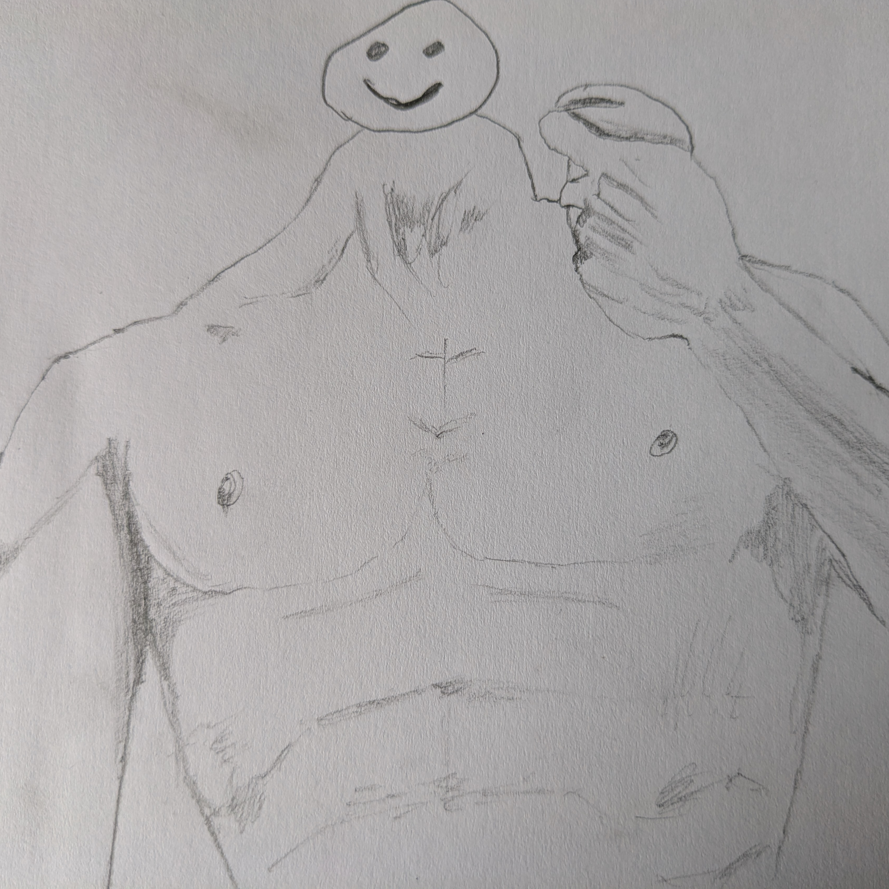

Why Are There Doodles In Every Blog Post?
In the first of a series of posts answering questions nobody has actually asked, I thought I’d address the fact that I put my incredibly amateurish drawings in every post. This’ll be a short one, there’s really not much to it.
Once upon a time, I was in a pretty bad road accident. I’ll leave the gory details for another time but I was messed up in many ways. One of my injuries was an open fracture of the radius and ulna in my right (dominant) hand. I’ve got a bunch of scars and metal plates and a bit of nerve damage. Tingling, loss of fine motor control, poor grip strength, that sort of deal.
Recently, in an attempt to improve my fine motor function, I’ve started to draw a little here and there. When I decided to restart my blog as a static site I had the bright idea of including a picture with each post. This has the effect of making me do a few extra drawings, which I hope will help with my hand.

Safe to say I could use the practice as well
It’s too soon to tell whether it’s making any difference, but I am quite enjoying it. Like the entirety of this website, it’s a thing i do primarily for myself and then lob out into the aether on the odd chance that someone else finds a bit of value in it.
That’s all I’ve got for today, thanks for reading.
Toodles,
–Antony F.